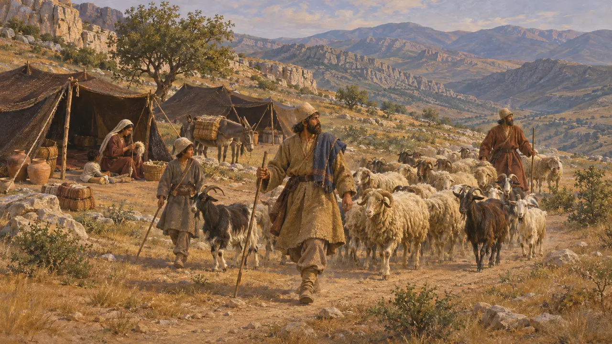
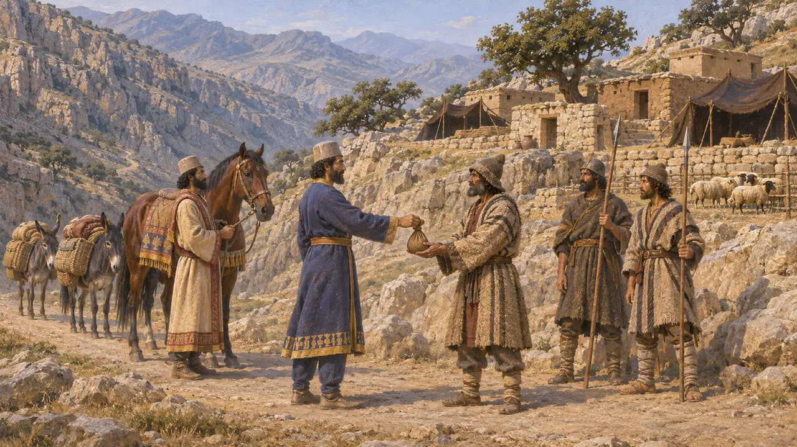
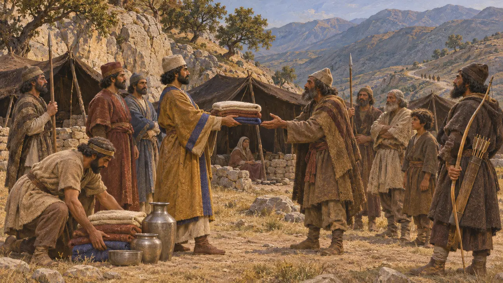
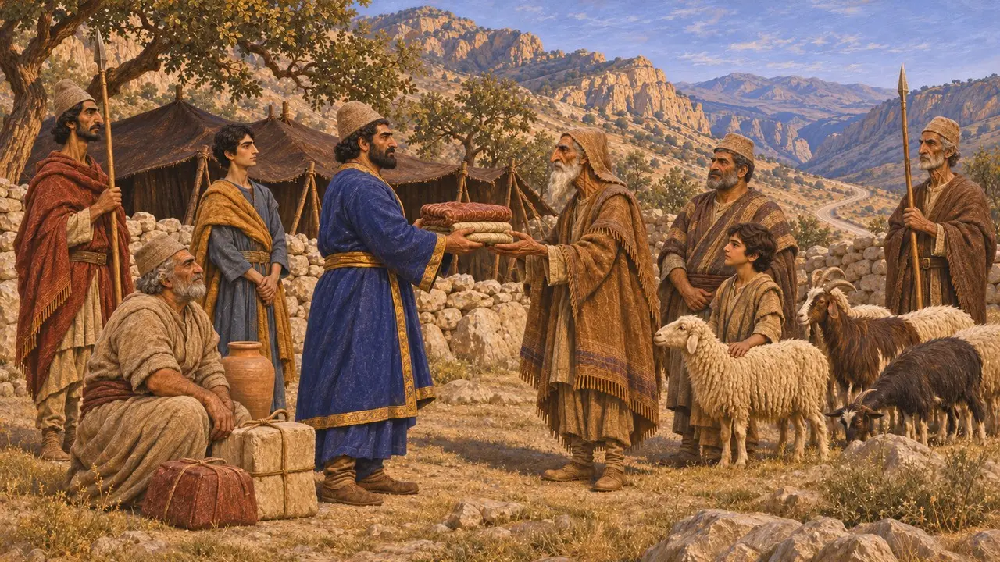

Campamento de saqueadores de las colinas
Campamento de los pueblos montañeses de Pérside y los Zagros, siglos VI-V a. e. c.
Las montañas que rodean Pérside y las que bordean el camino desde Susa eran el hogar de pueblos pastores que vivían en parte fuera del dominio directo del Rey. Los autores griegos los llaman bandidos que cobraban peaje a los viajeros en los pasos. El campamento de saqueadores del juego representa a estas comunidades, aunque las fuentes sugieren que sus relaciones con los reyes persas eran más complejas que el simple saqueo.
En el juego: El campamento aparece en el mapa del nivel y el jugador no lo construye: tiendas ocultas tras una empalizada de estacas, que hay que quemar para detener las incursiones. Es una simplificación, pues las fuentes también registran que los reyes pagaban a estos pueblos.

Pastores entre las tribus persas
Relato antiguoHeródoto enumera las tribus de los persas y dice que algunas eran agricultoras, mientras que otras, entre ellas los daos, los mardos y los sagartios, eran nómadas. Esto sugiere que las tiendas y los rebaños trashumantes formaban parte de la vida de la propia Pérside, no solo de sus márgenes. No describe sus campamentos.
Herodotus 1.125

Los uxios y el peaje del paso
Relato antiguoArriano cuenta que los uxios, un pueblo de las colinas, dominaban el paso entre Susa y Persépolis y habían recibido un pago de los reyes persas cada vez que estos lo cruzaban. Cuando Alejandro llegó a finales del 331, le exigieron lo mismo. Él atacó sus aldeas y, en lugar de pagar, los obligó a entregar un tributo anual en caballos, bestias de carga y ovejas. Diodoro relata una historia similar.
Arrian, Anabasis 3.17; Diodorus 17.67

Coseos, mardos y los regalos de los reyes
Relato antiguoEstrabón, basándose en Nearco, escribe que los coseos del Zagros recibían regalos de los reyes cuando la corte se trasladaba entre Ecbatana y Babilonia. Nearco, según lo recoge Arriano, agrupa a uxios, mardos y coseos como pueblos que vivían del saqueo. Alejandro hizo campaña contra los coseos en el invierno de 324-323.
Strabo 11.13.6; Arrian, Indica 40; Arrian, Anabasis 7.15

¿Bandidos o socios del Rey?
En disputaLas noticias de estos pagos proceden de los historiadores de Alejandro y de autores griegos posteriores, que conocieron a los pueblos montañeses a través de sus campañas. Pierre Briant sostuvo que los pagos no eran un rescate a bandidos, sino un intercambio regular de regalos que vinculaba a los pueblos pastores con el Rey y mantenía abiertas las rutas. Otros ven en ellos una tensión y una violencia más reales. Ninguna excavación ha identificado un campamento de tales saqueadores de época aqueménida.
P. Briant, État et pasteurs au Moyen-Orient ancien, 1982; P. Briant, From Cyrus to Alexander, 2002
Fuentes
- Arrian, Anabasis 3.17
- Strabo 11.13.6
- Herodotus 1.125
- Arrian, Indica 40
- P. Briant, From Cyrus to Alexander, 2002
- P. Briant, État et pasteurs au Moyen-Orient ancien, 1982